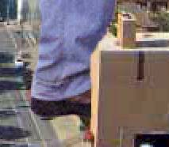
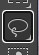
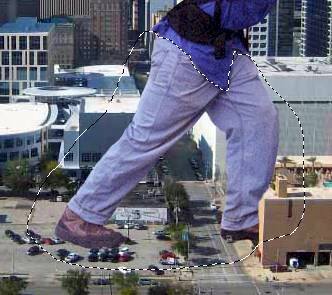
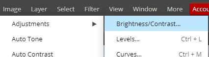
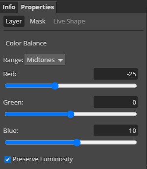
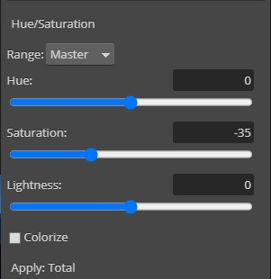
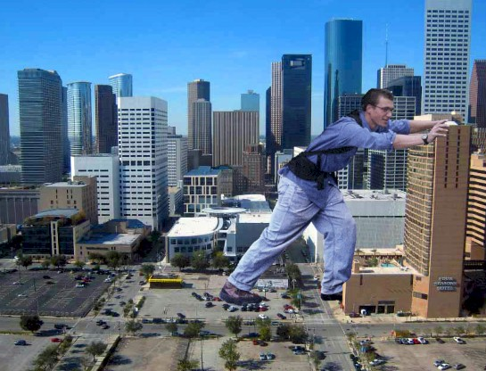

| Creating a
Giant in Photopea: Adjusting our Giant |
Things are
looking pretty good to this point, but we do have a few issues we need to clean
up to make our guy look like he belongs in the city.
-
Zoom
in on his left foot (that is, the left foot if you are him, but to us the
foot that is on the right side of the image - the one that should be going into
the building)
-
Change the Opacity of the guy layer to 50% so you can see the building through
his foot...

- Click the Eraser Tool...
- On the Eraser Tool options bar, click the brush selector drop down
arrow...
- Select the Hard Mechanical 12 pixels brush...
-
Remove the part of his foot covering the side of the
building, so that it looks like his foot is going in the dark area at the
front of the building...

Notice that in my image above, his pants still appear to be in front of the
building
-
Use the Eraser Tool to trim some material off the pant so that it looks like the pant is
pressed against the front
of the building...

-
Press Ctrl+0 (that's a zero) to zoom out so you can see the entire image
-
Zoom in on his arms...

-
Carefully remove the portion of his left arm that is in front of the
building (leave the right arm alone)...

It now looks like his left arm is wrapped around the building grasping the side
-
Press Ctrl+0
-
Now zoom in on his back foot and remove any part of his shoe that covers the cars
in the parking lot so that his foot appears to be behind the cars...

For me, the adjustment was small, but you may need to remove more depending
on where your guy is standing
Be careful when making the above adjustments. They will go a long way to
adding to the realism of your scene if done correctly. (Note: there is a car covered by
his forward foot, so feel free to erase the area of his foot covering this car as
well is you wish)
-
Set
the layer's Opacity back to 100%
The
next issue we need to deal with is that fact that his upper half is
considerably darker than his lower half (compare the color of his back foot to
that of his face). There are several ways we can correct this, so let's start
with one of the easiest and then talk about some of the other possibilities.
-
Click
the Lasso Select Tool...

-
Draw a selection area around his pants and shoes...

Don't worry if the selection is not perfect the first time you draw it- you
can always adjust the selection by zooming in and pressing the Shift key as you
drag with the Lasso Select Tool to add to the selection or pressing the Alt key as you
drag with the Lasso Select Tool to remove from the selection - take your time and make
an accurate selection as it is important that what we are about to do only be applied
to his pants and not his shirt
-
Click Image then point at Adjustments and click Brightness/Contrast...

This will open the Brightness/Contrast window...
-
Set Contrast to 100...

-
Click
OK
-
Press Ctrl+D
to deselect his legs - notice that his legs now match his upper body much
more closely than before...

Pay close attention to his back foot and the difference will be obvious
Some other ways we could accomplish the same thing would be by adjusting Levels,
Color Balance, Hue/Saturation, and even the Curves Adjustment. All will give us
darker legs, but none of them can accomplish the matching of the vividness of
the colors as easily or quickly as using Contrast.
He now has a constant depth of color across his entire body. Yes, his colors are
more vivid than the city, and we will deal with both that and the fact that his
color does not match his surroundings. Specifically, we need to adjust the tint of our guy to match
the overall tint of the city. You should have something similar to the image
below...
Notice that while the city is
composed mostly of soft blue and tan colors, our guy is made up of bold colors that
have a red tint to them. Even his pants, which are blue, have a definite red tint
to them. If we leave it like this, our guy will stand out in the picture.
Consider the following image...
Note that while the city in the above image is tinted green and blue, the baby has a distinct red
tint to her. Having images tinted in this way is actually very common.
Photographs taken outside tend to be tinted blue due to the sky (images taken in
direct sunlight tend to be tinted yellow because...well, you get it, right?).
Photographs of people tend to have a red tint to them because they are usually taken in
artificial light, and people generally look better tinted red. Notice that the
baby above looks out of place, and it is painfully obvious that she was added to
the image.
Now look at this picture...
Note that this time the surrounding area has a soft brown/orange tint while the
boy has a slight red tint. This image actually does a better job of matching the
tint, but the vibrant colors of the boy's clothes make it obvious that he was
added in.
Now look at this picture...
The baby in this image has been adjusted so both the tint and color depth match
the surrounding city. While we know that the baby was added into the image
(there are obviously no giant babies), the seamless flow of color across the
image means that the baby does not stand out, but instead blends into the scene.
This is what we are shooting for with our images - that our additions seem like
they belong in the image and do not scream 'I'm fake'.
We are going to fix both the tint and color depth issues with our image.
Again, there are several
ways to fix this, so let's use a method that not only makes changes to our
image that are easy to adjust, but does so in a way that does not alter our
original image. Let's work with Adjustment Layers. Adjustment layers are exactly
what the name implies - layers that make adjustments. The great thing about
adjustment layers is that they allow us to make visible changes to our image
without actually making changes to the image itself because the adjustments are placed on a separate
layer that we are free to modify, turn off, delete, etc. If this is a little
confusing, keep going and it will all make sense.
-
Make sure Layer 1 (the layer with the guy) is selected
-
At the bottom of the Layers panel, click the New Adjustment Layer icon...
-
From the pop-up menu, choose Color Balance...
Note that a new layer named Color Balance 1 has appeared in your layer
stack...
and that the Properties panel has opened with the Color Balance options
loaded...
A quick word about the Color Balance 1 layer. You will notice that there are
2 boxes on the layer separated by a chain...
The box on the left, with the Col in
it, let's us know what kind of adjustments this layer is making - in this case
Color Balance. The box on the right indicates where on the image the color
balance adjustments are being applied. White areas mean the adjustment is being
applied, while black areas means it is not. The entire box being white indicates
that the adjustment is being applied to the entire image. If this seems a little complicated, so just
keep working and it will become clear.
We need to decrease the amount of red in the image while bumping up the
amount of blue a tiny bit.
- Adjust the Color Balance settings to match the image below...

Make especially sure that you change the Range to Midtones and that Preserve
Luminosity is checked, as in the image above
Your image should have gone...
Notice that the color adjustment is applied to the entire image
(compare the concrete in front of the guy - notice that is is much bluer in the
right image) and not just to the guy. Our city is already blue enough, so let's
set our adjustment layer to only impact the guy.
- With the Color Balance 1 layer selected, press and hold the Alt key and
click on the layer - Photopea should add a small downward pointing arrow to
the layer...
That tiny downward pointing arrow lets us know that the adjustment layer is
only being applied to the layer immediately below it, which is the guy layer.
Your image should now look like this...
If you compare this to the image above, you will notice that the
tint of the background is unchanged while the guy is now much less red. We now
need to do something about how vivid our guy is when compared to the city.
- Click on Layer 1 (the guy layer) to select it
- At the bottom of the Layers panel, click the New Adjustment Layer icon
(yes, we can have more than one adjustment layer)
- This time choose Hue/Saturation...
Photopea should add a Hue/Saturation adjustment layer to your Layers panel...
- Alt+click on the Hue/Saturation 1 layer so that it is only applied to
Layer 1...
-
Adjust the setting in the Hue/Saturation Properties panel to match the
settings below...

This will make it so that the colors in our guy are not overly vivid -
Close the Properties panel by clicking the Pro icon...
We now have something similar
to this...

While in general he looks
pretty good and now actually fits in with the city, our adjustments have
resulted in some colors being off. Specifically, his skin and his shoes. They
both appear to be a little too blue. We need to make a quick modification to the
one of the adjustment layers so that he skin and shoes look a little more
realistic.
-
Press D on the keyboard to set black as
the foreground color and white as the background color...
-
Select the Brush Tool...
-
In the Brush
Tool options bar, select the Hard Mechanical 24 pixels brush...
-
In the Layers panel,
click the white box indicated below...
Remember, this box determines where on our image the adjustment is actually
applied
-
Zoom in on
his rear foot and color over his shoe - it should go...
If you look at the white box you selected two directions ago, you may now notice
a small black smudge on it...
That is the area you just drew with the Brush Tool. Remember, the white area of
the box indicates where the adjustment is being applied in the image, and the
back area indicates that the adjustment is not being used there. So what the
above graphic is telling us is that the adjustment is being applied everywhere
(and since we are only applying it to the layer below, it is actually only being
applied to the guy), except where his shoe is. Notice that his shoe now looks
more brown and thus more realistic. Let's do the same thing to his skin to get
it back to a more realistic color.
-
Use the
Brush Tool to color over his face and arms - he should go...
The difference is subtly, but notice that his skin tone is much more
realistic, but not so red that he looks like he doesn't belong in the image
-
Press Ctrl+0 to zoom out
and see the entire image
Your image
should now look something like this:
Let's save our work to this
point.
-
Click File and then click
Save as PSD...
-
Save the image as
GIANT.psd in your GIANT folder